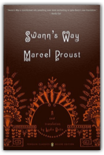
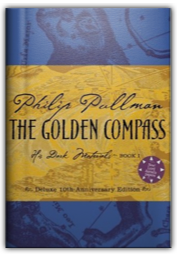

|
"Thought Police." "Big Brother." "Orwellian." These words have entered our vocabulary because of George Orwell's classic dystopian novel, 1984. The story of one man's nightmare odyssey as he pursues a forbidden love affair through a world ruled by warring states and a power structure that controls not only information but also individual thought and memory, 1984 is a prophetic, haunting tale. Considering that much of his life was spent in poverty and ill health, it is something of a miracle that in only forty-six years George Orwell managed to publish ten books and two collections of essays. Here, in four fat volumes, is the best selection of his non-fiction available, a trove of letters, essays, reviews, and journalism that is breathtaking in its scope and eclectic passions. Orwell had something to say about just about everyone and everything. His letters to such luminaries as Julian Symons, Anthony Powell, Arthur Koestler, and Cyril Connolly are poignant and personal. His essays, covering everything from "English Cooking" to "Literature and Totalitarianism," are memorable, and his books reviews (Hitler's Mein Kampf, Mumford's Herman Melville, Miller's Black Spring, Goldsmith's The Vicar of Wakefield to name just a few) are among the most lucid and intelligent ever written. From 1943 to l945, he wrote a regular column for the Tribune, a left wing weekly, entitled "As I Please." His observations about life in Britain during the war embraced everything from anti-American sentiment to the history of domestic appliances. Paine's daring prose paved the way for the Declaration of Independence and the Revolutionary War. This volume also includes "The Crisis," "The Age of Reason," and "Agrarian Justice." This is an OCR edition without illustrations or index. It may have numerous typos or missing text. However, purchasers can download a free scanned copy of the original rare book from GeneralBooksClub.com. You can also preview excerpts from the book there. Purchasers are also entitled to a free trial membership in the General Books Club where they can select from more than a million books without charge. Original Published by: G.P. Putnam's sons in 1890 in 237 pages; Subjects: Rationalism; Philosophy / General; Philosophy / Epistemology; Philosophy / Ethics & Moral Philosophy; Philosophy / History & Surveys / General; Philosophy / History & Surveys / Modern; Philosophy / Movements / Rationalism; Religion / Agnosticism; A Dance to the Music of Time – his brilliant 12-novel sequence, which chronicles the lives of over three hundred characters, is a unique evocation of life in twentieth-century England. Miscellaneous Verdicts represents the best of Anthony Powell's critical writing over a period of four decades. Drawn from his regular reviews for the Daily Telegraph, from his occasional humorous pieces for Punch, and from his more sustained pieces of critical and anecdotal writing on writers, this collection is as witty, fresh, surprising, and entertaining as one would expect from the author of Dance to the Music of Time. |
Anthony Powell's universally acclaimed epic encompasses a four-volume panorama of twentieth century London. Hailed by Time as "brilliant literary comedy as well as a brilliant sketch of the times," A Dance to the Music of Time opens just after World War I. Amid the fever of the 1920s and the first chill of the 1930s, Nick Jenkins and his friends confront sex, society, business, and art. In the second volume they move to London in a whirl of marriage and adulteries, fashions and frivolities, personal triumphs and failures. These books "provide an unsurpassed picture, at once gay and melancholy, of social and artistic life in Britain between the wars" (Arthur Schlesinger, Jr.). The third volume follows Nick into army life and evokes London during the blitz. In the climactic final volume, England has won the war and must now count the losses. Third in a series of journals, this book includes the author's memories of Evelyn Waugh, Philip Larkin, John Betjamin, Kingsley Amis, and Marlene Dietrich.

Swann's Way: In Search of Lost Time, Vol. 1
Marcel Proust, Lydia Davis
Marcel Proust’s In Search of Lost Time is one of the most entertaining reading experiences in any language and arguably the finest novel of the twentieth century. But since its original prewar translation there has been no completely new version in English. Now, Penguin Classics brings Proust’s masterpiece to new audiences throughout the world, beginning with Lydia Davis’s internationally acclaimed translation of the first volume, Swann’s Way.

The Golden Compass, Deluxe 10th Anniversary Edition
Philip Pullman
Published in 40 countries, Philip Pullman's His Dark Materials trilogy—The Golden Compass, The Subtle Knife, and The Amber Spyglass—has graced the New York Times, Wall Street Journal, San Francisco Chronicle, Book Sense, and Publishers Weekly bestseller lists. In 1996, The Golden Compass changed the face of fantasy publishing, and 2006 marks its 10 Year Anniversary—and an opportunity to celebrate with a deluxe hardcover. Pullman created new material just for this edition (archival documents, scientific notes and "found" letters of Lord Asriel) which has been illustrated and handlettered by renowned British artist Ian Beck and will be included in the back matter. The deluxe edition also features Pullman's own chapter opening spot art. A quality collectible—with the enticement of never-before-seen new material—for Pullman fans. |